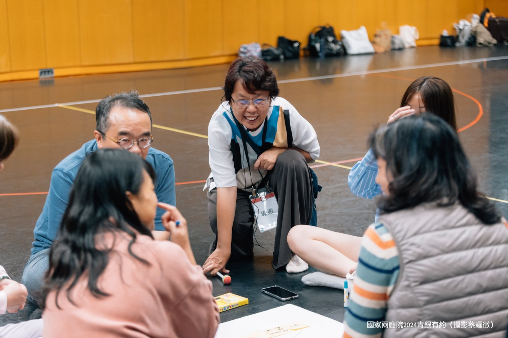

展齡教學藝術家
陳懷萱 HUAI-HSUAN CHEN
一句話定位
展齡教學藝術家｜設計中介者｜意義共創者
透過人類學的洞察與劇場的感官，創造「相遇的空間」——讓不同世代、不同背景的人在此停留、對話，共同構建對未來的想像。
「教學不應只是知識的灌輸，而是一種實踐。它是創造一個『相遇的劇場』，讓不同背景、不同世代的人在此刻停留、對話，並在互動中共同構建對未來的想像。」
我在台灣的終身學習現場工作。劇場與人類學兩套訓練，最後交織成同一套方法：把田野的觀察力用在教學設計上，把劇場的感官經驗用在讓人願意開口、願意靠近彼此的場景裡。
展齡是什麼
相較於「高齡」「樂齡」這些既有的族群分類標籤，我用「展齡」作為框架：不是把某個年紀的人劃成一群，而是強調在生命的任何階段，每個人都能進行四件事。
社會一起長大變老 「老年」是觀察社會系統缺陷的視角，也是重建跨世代連結的契機。
所以我相信：即使沒有醫療或社福背景，每個人都能在高齡議題上發揮積極貢獻——透過展齡設計與跨世代共創，讓「變老」成為一個值得期待的社會實驗。
展齡創生：我目前實踐的核心思維
以地方為本，打造安居樂業的生活與工作型態，是地方創生的發展目標。策略推動除了創造青年移居返鄉就業與生活的機會，也要留住長者涵養地方知識、建構在地安老的環境，讓地方每個人都有自己的角色，營造互相照顧、共同生活、自助互助共助的在地安老共好模式。
整個社會是一起長大變老的。如何促進地方持續成長的活力，有賴所有利害關係人的參與與協力，有待我們一起設計對於未來長大變老的日常公共行動與對話空間，來創造連結。
目前我以社區大學為主要的觀察與分析對象，探究樂齡乃至高齡族群「以學習之名」互助、自助，參與社區共生與創生的可能性。這個提問的出發點是從「展齡」而非「地方」出發：從不同世代的「人」在地交織的生命意義與價值來與地方創生對話，檢視關鍵「行動者」如何形塑與重構地方意義的動態過程。
我怎麼工作

國家兩廳院 2024 青銀有約（攝影：蔡耀徵）
人類學給我田野洞察與「去熟悉化」的眼光，劇場給我感官互動與敘事轉化的手法。實際工作時，它們收斂成三個方法：
田野思維：課堂就是田野
扎實的田野調查訓練不只是學術基礎，而是面對任何應用情境的核心素養。我在台大創新設計學院開設「在地展齡：家文化專題」，把課堂變成一門很活的微型田野課：學生自己設計訪綱、訪談長者、寫田野筆記，在「向外」實踐的同時，也練習「向內」整理自己的衝擊與好奇。
田野也意味著移動。移地教學到宜蘭深溝的新小農聚落、南澳的泰雅部落，場域是培育「關係人口」的培養皿——讓學生從觀察者轉化為參與者與引路人，在「交流以上，定居未滿」的距離裡，找到自己和地方的關係。
相遇的場景設計
在解決問題（problem）之前，我更在意讓現象變成可感、可對話的問題（Question）。做法是設計「相遇的場景」與「暖關係」的基礎：在田野移動的過程中設計「啟動儀式」，把空間的位移轉化為心理與文化的切換；以「日常生活即場景」為核心，透過物件、身體與空間的編排，創造「非日常」的感知時刻。
戲遊銀髮 劇作老年
以劇場為方法，探索「老」的多元性。從戲劇角度設計角色，引導參與者透過「入戲」與「出戲」，把他者的角色扮演轉化為映照自身對老年觀察的旅程。目標對象不只是老年人，而是所有跟「老」有關係的人。
延伸閱讀：CLABO 實驗波專訪：用劇場深化社會實踐的人類學家（2019）
目前主要實踐場域
潭美銀髮服務新創活力中心
我把潭美當作回應超高齡社會的「實驗沙盒」，而不只是一個要執行的專案。作為設計中介者，這裡的工項涵蓋主題策展、青銀共學、志工創新、老幼共融——每一項都是一套對話設計的實驗：用策展把「獨居獨老」「社會處方箋」這些抽象的政策概念，轉化成可感、可參與的生活展覽；串連醫療健康、社大學習、青年就業等不同領域的工作者，進行跨域共創。
潭美不是一個處方模式的複製者，而是把社大的全齡共學能量、大學的青銀共創課程、跨域合作的專業團隊，放在一個都會在地老化的現實場域裡交織、實驗、迭代。
線上策展：一個人變老：都會安老的多元面貌｜策展手記：倒敘補進度：潭美 2026 的第一檔線上主題策展
永和社大共好行動會社
社大是台灣少見的混齡共學現場：師生年齡從戰後嬰兒潮世代的學長姐到 Z 世代，因為一起長大變老，「變老」是在日常裡自然發生的事。我把這裡當作長期的田野觀察場域，探究展齡意涵的多元可能，也設計體驗式、對話式的共學活動，讓參與者從自己的生活經驗出發，一起練習公共生活。
從一門課長成自主運作的社群，這個過程讓我看見：社大天然具備了共生社區所需要的基因——互助的意願、角色賦能的文化，以及真實的關係連結。
著作：《田野敲敲門：現地調查基本功》共同作者、《田野敲敲門 2：調查研究再進攻》共同主編。
完整的學經歷、場域紀錄與課程成果，請見跨域實作軌跡。